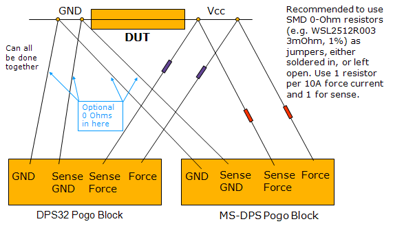

DC Scale DPS32 and VI32 card
The DC Scale DPS32 and VI32 power supplies can reside in any I/O channel card slot.
| Supported V93000 systems : Smart Scale (SmarTest 7), Pin Scale, HSM |
DC Scale ganging
To achieve a higher output current, you can operate multiple DC Scale channels in parallel, known as ganging. Ganging is the combining of multiple DPS channels to provide a higher current than a single DPS channel could provide. The actual ganging is done on the DUT board. For details see Connecting DPS channels in parallel.
DPS32 and MS-DPS DUT board compatibility
To design a DUT board that is compatible for both MS-DPS and DPS32 power supplies, Advantest recommends to use SMD 0-Ohm resistors as jumpers. These can be either soldered in or left open. See the graphic below:

The 0-Ohm resistor has to be added because the DPS32 AC relay is implemented using a solid state approach. This does not guarantee a true open circuit when using the MS-DPS only, or the configuration sketched above, which can result in a performance degradation.
Functional changes
- Introduced before SmarTest 6.3.2